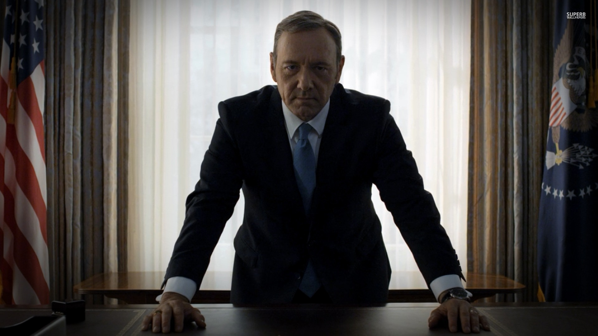

Sunset
Seahawks

Hikes

Universe

The Wii U is a gaming console that uses both digital and physical technology very well. Utilizing motion, touchscreen, and camera technology, the Wii U's gamepad is one of the most versatile gaming controllers on the market. It is used by gamers of all ages, with the primary audience being teenagers. Games are the digital content, with downloadable and disk games available. Physicallity exists in the controllers, allowing players to play the game with more physicality than just a thumbstick.
3D touch is a very physical aspect of the brand new iPhone. Now the touch screen is more than just tapping. How hard you press on the phone's touchscreen will change how the phone reacts. This adds more of a physical way to interact with all the digital aspects of the phone. Various applications are the digital part of the phone, but the physical part belongs to the 3D touch.
Seattle has recently implemented new crosswalk systems in the more populated areas of the city. The digital aspect of the crosswalk has stayed the same, with an algorithim determining when the crosswalk is available. However, the button has changed to have more physical feedback. Sound and vibrating feedback occurs when the user pushes the button, allowing the user to know when their input is received. This creates a very necesarry physical feedback for people of all kinds.
Google Maps has a very in depth digital part of its application. It has various algorithims to compute traffic and time, as well as a very complex representation of the map. Our position is very physical, and helps keep google up to date. Moving down the street or even turning the phone will update the digital display.
Virtual reality in gaming is the next big thing, and it is attempting to bridge the gap between our physical world and the digital world of the games. The universe that the game takes place is the digital aspect. How the Oculus Rift takes the users movement and turns are the physical part of the device. Users now feel as if they are actually in the game world, a very perfect example of physical and digital designs.